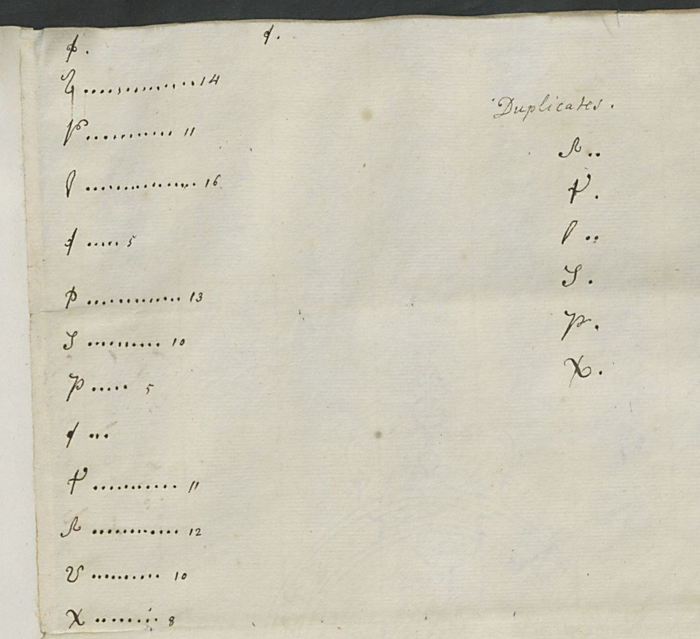

At a glanceAttempted · not read
- The document
- One cipher page, f. 37r: ten lines of invented cursive signs, 205 in all, each followed by a dot. Sender and recipient are unknown. A docket reads “4 Aout 1728 / 31 Aout / 5 8bre”.
- Where
- British Library, Add MS 32287 ff. 37–40, DECODE R7707. The catalogue listed it as a ciphered letter between unknown correspondents, dated by the volume’s span, 1716–1836.
- The leaves around it
- The other leaves are a codebreaker’s worksheets: frequency tallies, contact tables, a list of doubled signs and the guess “l – vowel – e”. There is also an unrelated household bill. He never reached a reading.
- How it was tried
- The signs were transcribed, and the counts agree with his tally on f. 40r. The index of coincidence is 1.07, which is flat and rules out a simple substitution. Annealing in seven languages, Vigenère and Beaufort at periods 5 and 10, and a Quagmire-type search all failed.
- Still open
- The whole letter. Two hundred signs are too few to break a polyalphabetic system without the key.
01 The documents

- f. 37r: the cipher, ten lines, 205 signs, no word division. About 27 distinct signs.
- f. 38r–v: a first tally, with some signs struck out; a list headed “Duplicates”; tables of the signs before and after the commonest sign and after l.
- f. 39r: an unrelated household account in English (bread, flour, milk, meat, sugar: 18s 11d).
- f. 39v: the codebreaker’s guesses: l a vowel, e; three other signs consonants.
- f. 40r: a fair count of 26 signs, with a second “Duplicates” list.
- f. 40v: docket S.n 4 Aout 1728 / L.s 31 Aout / L.s 5 8bre. It is in French and lists three letters.

02 The cipher
The transcription (ct.txt) uses arbitrary labels for the signs. Its counts match the 1728 tally within a few units for every sign: the commonest sign has 14 against his 14, and l has 13 against his 16. The “Duplicates” are simply the signs that occur doubled in the text.
The index of coincidence is 1.07, where 1.0 is random. A monoalphabetic substitution of French or English would give 1.7–2.0. There is no repeated trigram in 205 signs. The periodic index rises slightly at periods 5, 10 and 15 (1.25, 1.34, 1.29). That hints at a five-alphabet system, but columns of about 41 signs are too short to prove it.
03 What was tried
- Simple substitution by simulated annealing with the
lang/4-gram models: English, French, German, Dutch, Italian, Spanish, Latin. The best was about −5.1 log-probability per letter; real text scores about −2.5. There are no words. - Vigenère, Beaufort and variant Beaufort at periods 5 and 10. These took the order of the 1728 tally as the sign alphabet. None reads.
- An unknown sign alphabet combined with periodic shifts (Quagmire type), periods 5 and 10, French and English. None reads.
04 What would finish it
Only outside material. That could be the key, or the other letters on the docket (31 August and 5 October 1728). More text in the same system would make a periodic attack feasible. The other DECODE records from Add MS 32287 (R7746–R7751) are Swedish keys of the 1830s, not this alphabet.
05 Sources
- British Library, Add MS 32287 ff. 37–40, images on DECODE, record R7707 (login).
Transcription, scripts, notes and profile: r7707/.